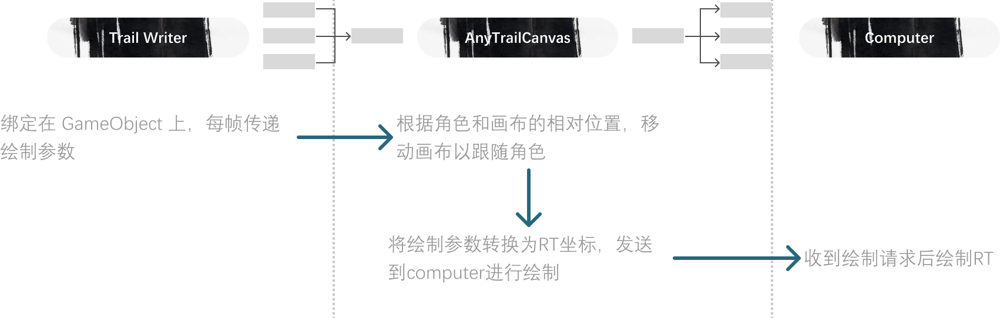

Any Trail
Create any shape of trail under player and generate RT
Click here to
download
playground (*^_^*)
[WSAD to move, space to draw, 1234 to open/close brushes ]
Introduction
This plugin can generate a canvas under the character's feet that moves with the character, pass the character's movement information to the canvas, and draw the trajectory as RT.All pattern drawing is done in the Computer Shader, no additional camera is needed, and the RT resources are dynamically allocated with respect to required effect
RT can be passed into the terrain and other objects as a mask in the shading stage.
Function
Four types of trajectories are supported, but the system can be expanded to support any procedural graphics:- 2D fluid: Jacobi iteration method to solve the Navier-Stokes equations, can be used for interaction with the sea
- Surface Ripple: Wave equation, can be used for interaction with players on shallow water surface
- Trajectory: Continuous drawing of circles, can be used to draw continuous tracks on sand or snow
- Pattern: Draw any pattern, control random quantity and position. Used for drawing footprints of any shape or particle effects affecting the terrain
Construction

Use case

[WSAD to move, space to draw, 1234 to open/close brushes ]